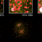

有用户称月薪39万公司负担69万，税务师指数字有误
2 条帖子，合计浏览 50.9 万次
经营24个校区补习班的川上HIRO大树在 X 上公开了公司发给员工的资料：月薪约39万日元的员工，公司实际为他花了约69万，他到手只有约26万。用户長谷川豊转发时说日本的税太高，帖子获得7400多个赞、约48万次浏览。税理士（日本的持牌税务师）谷翔一郎随后指出资料里两个数字都对不上，这些都是个人账号的说法。
- 资料内容
- 资料列出的公司负担有：工资约39.2万日元、公司承担的社保等约7.2万、退职金和奖金的积累约13.1万、津贴和福利约5.5万、相当于消费税的约3.9万，合计约69万。员工实际到手约26万。 X 用户
- 69万偏高
- 谷翔一郎指出，积累的13.1万在资料注释里写明“不承诺支付”，还算不上已经为员工花的钱。工资本来就不收消费税，发工资不会让公司多交税。去掉这两项，公司负担约52万。 X 用户
- 到手也不对
- 按他的计算，39.2万扣掉本人负担的社保约6.8万和所得税约1万，还剩约31.4万。再扣住民税（交给居住地政府的税）也到不了26万，资料里看不出还扣了什么。 X 用户
- 真实负担
- 他认为公司负担的社保约7.2万是真实成本，单这一项已经很重。用准确的数字说明，员工才更容易理解。 X 用户
认为39万工资被扣掉13万、到手26万，说明日本税负远超限度，主张大幅减税，停止靠发钱拉票的政治。
 長谷川 豊
長谷川 豊
プルデンシャル生命上半年新签保单减少九成多
1 条帖子，合计浏览 21.1 万次
寿险公司プルデンシャル生命保険25日公布2026年4到9月的半年财报，新签保单件数比去年同期少92.5%，只有约1.2万件。原因是营业员不当收取客户钱财的丑闻曝光后，公司从2月起自行暂停营业活动，金融厅（日本的金融监管机构）也已命令它停止部分业务。Yahoo新闻把这条消息放进推荐话题，帖子获得700多个赞、约21万次浏览。
- 新签保单
- 4到9月新签保单约1.2万件，比去年同期减少92.5%。 共同社
- 起因
- 营业员等人不当从客户那里收钱，涉及金额约52亿日元。公司从2月起自行暂停营业活动，这是新签保单骤减的原因。 共同社
- 监管处分
- 金融厅依据保险业法，对公司下达了部分业务停止命令。 共同社
- 利润下滑
- 基础利润（衡量保险本业盈利的指标）减少33%，降到约128亿日元。公司说，为防止金钱丑闻再发而整顿体制，费用增加了。 共同社
- 保费收入
- 相当于营业额的保费等收入减少约6%，约6500亿日元。 共同社
补充来源：プルデンシャル新規契約９２％減
财务省提议向美容医疗机构收负担金养地方医生
1 条帖子，合计浏览 10.5 万次
日经新闻23日报道，财务省在财务大臣的咨询机构财政制度等审议会上提出，向美容医疗等自费诊疗机构按医生和护士人数征收“医疗人才确保负担金”，用来培养和留住地方医疗人才。背景是“直美”（医生结束初期研修后直接转做美容医疗）越来越多，地方和急救现场缺人。日经的帖子被一位正在接受专科培训的医生转发，他批评根源在医生报酬太低，获得2400多个赞。
- 方案内容
- 财务省11月在财政审议会上提出，按美容医疗等自费诊疗机构里医生和护士的人数收取负担金，交进专门基金。这笔钱用于培养和确保在地方工作的医生和护士。 日经、ABEMA TIMES
- 公费成本
- 财务省测算，培养一名医生，国立大学要花约3000万日元公费，私立大学约2400万。 日经、ABEMA TIMES
- 为何这样做
- 网络电视台 ABEMA 的节目里，一位说明制度用意的嘉宾说，结束临床研修、第3年就去美容外科的医生急增，急救现场越来越吃紧。宪法保障职业选择自由，很难直接规定医生去哪里工作。 ABEMA TIMES
- 网上反应
- 社交媒体上有人赞成“应该还公费”“该管管直美”，也有人说“把直美当坏人”“该先改善地方医疗的待遇”。 ABEMA TIMES
补充来源：“憧れるのはやめてほしい”アレン様も苦言…病院が人材不足 初期研修⇒美容医療へ“
原帖専攻医コロ
认为根源在诊疗报酬（医保付给医疗机构的价格）每点10日元从昭和年代一直没改，医生拿不到合理报酬。
専攻医コロ
政府两年九个月来首次下调个人消费判断
4 条帖子，合计浏览 3.2 万次
政府24日在首相高市早苗出席的阁僚会议上提交11月的月例经济报告（政府每月发布的官方景气判断），把个人消费从“出现回升迹象”下调为“回升出现停滞”，这是2024年2月以来首次下调。物价高让家计吃紧，日银（日本的中央银行）12月会不会继续加息也成了时间线上的话题。一条把下调归咎于高市政权的帖子获得600多个赞。
- 下调内容
- 个人消费的判断从“出现回升迹象”改为“回升出现停滞”，是2年9个月来首次下调。 时事通信、TBS
- 原因
- 政府认为，中东局势恶化带来的物价上涨和节约意识增强压低了消费，自然灾害和天气不佳也有影响。 TBS
- 整体判断
- 景气整体的判断从“缓慢恢复”改为“总体来看缓慢恢复”，仍维持恢复的看法。 时事通信
- 加息预期
- 12月追加加息仍是市场的基本预期，全球股市如果继续下跌，也可能推迟到明年1月。日银政策委员浅田和佐藤此前曾主张暂缓加息。 TBS、彭博社
补充来源：消費判断、２年９カ月ぶり下げ＝物価高で“持ち直しに足踏み”―１１月経済報告、“個人消費”は2年9か月ぶりに下方修正 家計と企業に“温度差” 11月の月例経済、日銀の『主な意見』に“主な異見”なし 浅田・佐藤両委員らの慎重論と12月利上げの
市场用来推测加息终点的“2年后1年期利率”已降到约2.1%，如果12月从1.25%加到1.5%，之后大约还剩两次加息。
 めらめら
めらめら惊讶政策利率可能从1.25%一路加到2%，担心经济和股市受到冲击。
もふ社長注意到长期利率在一周内明显下降。
 マンション好きの外資コンサル
マンション好きの外資コンサル
三菱UFJ信托：售价每坪500万成开发商拿地门槛后续
2 条帖子，合计浏览 1,833 次
之前的报道：11月25日午间“房产账号续议豊海塔楼退定，有人提醒先查冷静期”
三菱UFJ信托银行的不动产研究所24日发布报告，根据对公寓开发商的问卷分析，开发商拿地的范围已缩到东京23区再往外一点，大型开发商要售价达到每坪（约3.3平方米）约500万日元才愿意开发。离市中心越远、房价越低的地方，今后越难盖出新公寓。房产账号转发报告讨论郊外新房会不会消失，有用户还称小平站北口的再开发已有开发商退出。
- 售价门槛
- 大型开发商普遍表示，板楼公寓要卖到每坪约500万日元才划算，一套约66平方米的家庭户约1亿日元。中坚开发商说每坪400万左右还会考虑。 三菱UFJ信托银行
- 建筑费
- 2026年7月，郊外家庭型公寓的建筑费约每坪213万日元，是5年前的两倍多。80%的开发商说会减少郊外离车站远的地块，56%说会增加市中心离车站近的地块。 三菱UFJ信托银行
- 车站变化
- 调查覆盖首都圈25条线路的646个车站。一年内，考虑在八王子站周边拿地的开发商比例从约65%降到约26%，所沢从约65%降到约32%，海浜幕張从约52%降到约16%。 三菱UFJ信托银行
- 距离影响
- 到新宿、东京等山手线主要车站的乘车时间每多10分钟，考虑拿地的比例约降14个百分点。乘车超过20分钟的地方，新房售价多数低于每坪500万。 三菱UFJ信托银行
- 今后
- 报告预计新建公寓的供应会继续减少。买家因利率上升购买力下降，开发商和买家的价格预期会更难对上。 三菱UFJ信托银行
引述建设通信新闻称，小平站北口再开发的三家开发商以工程费高涨、收支不成立为由提出中止讨论，100米级双塔缩到60米级也不划算。
 モノリス・キャピタル
モノリス・キャピタル列举和田興産、タカラレーベン等在郊外供房的开发商毛利率约17%到24%也照样盈利，认为大开发商只是不愿接受低利润。
 AR
AR
房产账号争论“成交价持平”说，降价挂牌续出后续
27 条帖子，合计浏览 14.2 万次
之前的报道：11月25日午间“房产账号续议豊海塔楼退定，有人提醒先查冷静期”
常在房产投资媒体“楽待”节目上发言的房产评论人沖さん说，媒体在炒“公寓暴跌”，按实际成交价看行情几乎持平。时间线上的房产从业者和投资者纷纷反驳，说问题在于房子根本卖不掉，同时继续贴出湾岸、川崎等地的降价房源。以下说法和房源都来自个人账号的观察。
- 持平说
- 据一位用户整理，沖さん认为按成交价看行情大体持平，没有出现大幅暴跌。湾岸塔楼成交停滞，是转卖者和外国投资者撤退造成的。 X 用户
- 反驳
- 一位房产从业者说，收购二手房的业者变得谨慎，1亿日元以上的房子不再收购的业者增加了，问题是几乎没有成交。用户のらえもん说，大型房产网站 SUUMO 上23区房源的降价改价数已是新挂牌数的4倍。 X 用户
- 降价挂牌
- 有用户观测到港区高级公寓三田ガーデンヒルズ有一套降了约3.1亿日元。有明的プレミスト有明ガーデンズ一套约65平方米的三室户从约1.02亿降到约9500万，成为楼内最便宜的三室户。恵比寿シティハウス一套降约2200万，约18%。 X 用户
- 卖不动
- 川崎站旁的塔楼サンクタス川崎タワー一套3层三室户降到每坪约467万日元，是楼内最低价，楼里多数房子挂了3个月以上没卖掉。湾岸塔楼パークタワー東雲从11月中旬起在售房源急增，占全楼约4.6%。还有用户说一室户和两室户最难卖，打算长住的买家只看70平方米以上的三室户。 X 用户
- 中国买家
- 有用户称，大阪梅北一带的中国买家约九成想卖房，一套约2.2亿日元的房子不到一年降到约1.5亿。他把原因归于2025年10月起经营管理签证的资本金要求从500万提到3000万、日中关系紧张和利率上升。 X 用户
指出湾岸新塔楼豊海タワー后续批次比第1期第1次涨价约73%，这些买家放弃定金的诱因很大。
 ジョエル・ローション
ジョエル・ローション提醒豊海タワー靠仓库一侧大货车往来频繁，路边停车时逆行也常见，有小孩的住户要注意。
Kachidokids认为挂牌价不断下调却很少成交，是流动性差的资产暴跌前兆，一旦开始成交就意味着抛售加速。
すてぃーぶ
仍在讨论
- 时间线续议支援金最高年27万日元方案
时间线上还在转发政府研究给双职工家庭每年最多约27万日元支援金的报道，一位税务 YouTuber 列出所得税加住民税最高55%等税率，主张别再发钱、改为减税和降社保，获得6900多个赞。
- 时间线续议废除老人门诊自付上限特例
时间线上还在转发医生团体保团联对废除高额疗养费门诊特例的测算，一条批评高市政权“切割国民性命”的帖子获得4600多个赞、2300多次转发。
快讯
日本
企业并购中介公司MJS M&Aパートナーズ称内部网络遭非法访问，最多数千家公司的客户信息可能外泄。
徳丸 浩日经：民泊（出租民宅给游客）新规拟要求工作人员常驻，酒店推进前台无人化也受到波及。
 つせそぺそ
つせそぺそ路透：日本贸易振兴机构调查在华日企，和中国企业竞争加剧，有企业称“连擂台都上不去”。
ロイター共同社报道，国际货币基金组织预测日本GDP明年将被印度和英国超过，跌到世界第6。
 BRICS News
BRICS News有用户称访日外国游客人数刷新了单月历史纪录，赏樱和红叶季节最强。
見た診た観た三田有用户整理8个区的町丁数据：江东区青海2丁目外国人约占91%，葛饰区西新小岩2丁目约占65%。
おひとよし有用户统计东京地铁单线车站10年客流：北綾瀬增约68%，東陽町、西葛西各减约5%。
 すまいよみ
すまいよみ今年宅建（房产交易资格）考试约24.6万人应考、约4.6万人合格，合格率18.6%。
ミゲル有用户介绍，东京地方法院5月驳回了长野监狱男受刑者告国家只强制男性剃2毫米短发是歧视的诉讼。
250番新宿区景观审议会将审议新宿四丁目、新宿ALTA所在大楼重建和西新宿六丁目西第8地区三个项目。
超高層ビル・都市開発研究所の中の人有用户在博客平台 note 上整理了西新宿六丁目西部地区的再开发计划，并分析第8地区的前景。
tm建设通信新闻：涩谷二丁目西再开发总面积超过30万平方米，目标2029年开工。
 日刊建設通信新聞社
日刊建設通信新聞社
科技和 AI
MCP（让AI连接外部工具的协议）满两周年，Claude的Skills over MCP进入测试，Tasks正式开放。
Wey Gu 古思为Gemini 4 Neon新进展：Perplexity CEO称周二用量约445亿词元，比周一全天多23.5%。
Aravind Srinivas特斯拉FSD V15新进展：Touch Lab称已推送到旧款Model Y，Tesla Reality View也能用。
 Touch Lab
Touch LabAnthropic套现新进展：有账号称招股书列明另5位联合创始人也各卖约338万股，7人共约2365万股。
 Alva
Alva有用户称自己在亚洲旅行时，已完成实名认证的Anthropic账号被封。
netrunner有用户称用Gemini Carbon完成一项任务，消耗了5小时用量的85%。
sin有用户称让Gemini Neon重构FPGA（可编程芯片）上的计算核心，性能提高了十多倍。
 Resubino
Resubino有用户称Gemini常因用错思考标记，把思考过程显示在正式回答里。
Kk Shinkai评测机构Artificial Analysis在模型个性评测里新增了“slop指数”排行。
Aoとうふ有用户称GLM 5.3 Flash是用GPT 6 Astra蒸馏出来的，没有给出证据。
 Jesse P
Jesse PSebastian Raschka称GLM-5.4发布后，他的大模型架构图库已收录5个循环Transformer。
 Sebastian Raschka
Sebastian RaschkaEthan Mollick称多家大企业里2到3人的AI小组做了几十人的工作，引发管理层争斗。
Ethan MollickOpenAI推出OpenWorks计划，出钱请当地AI专家免费帮小企业导入AI。
 OpenAI
OpenAIMusk称Grok Bot能帮用户核查黑五优惠是否真实，降价时再提醒。
 Elon Musk
Elon Musk有账号称Starlink已装在约6.7万艘船上，2024年按收入拿下海上通信约39%份额。
Elon Musk路透引英国金融时报：欧盟计划设500亿欧元科技基金，与美中竞争。
 Reuters
ReutersSpaceX用Falcon 9从加州4E发射台执行美国太空军USSF-266任务。
 SpaceX
SpaceX有开发者称arrows We2公开的内核源码几乎只照搬了GKI（谷歌通用内核），缺少驱动部分。
 kailua
kailua有韩国用户称新MacBook与iPad的随航（Sidecar）功能可以用触摸操作。
 yongZa
yongZaSipeed在设计NanoKVM-Air：RISC-V芯片、1080P60、4×4×2厘米，预计售价40美元以下。
Sipeed有用户称Muse Home Link让Muse虚拟机里的Home Assistant控制家电，人感传感器联动灯实测成功。
inuro有用户为Debian 13上的桌面环境NextSpace做了日语化和输入法支持，准备放上GitHub。
 わーいのひと
わーいのひと有用户把实时3D高斯泼溅显示到Looking Glass Portrait上，每帧要约35毫秒，只有约24帧。
床井浩平有用户称键帽、电路板和铝外壳都让Claude设计，做出了第一把自制键盘。
︎︎有用户用Gemini Pro附送的10美元额度开了台Google Cloud机器当备用网络节点。
 Xiaowen
Xiaowen有用户用Claude和Flipper Zero复制了车库遥控器，成本3欧元，物业要价35欧元。
Kiko BeatsUnity插件Gesture Manager能在Game视图里测试VRChat的PhysBone和Contact Receiver，不用上传。
 まふ
まふ有用户分享动漫特效风格的网页UI组件库sakuga-vfx。
 Manish Kumar
Manish Kumar有用户发视频图解CPU、GPU和TPU的区别，帖子获得900多个赞。
パウロGradio称新版更轻、更快，也更安全。
Python SpaceHugging Face的NeurIPS 2026论文复现黑客松11月30日到12月13日举行，29日前报名。
Maria Gorskikh视觉研究青年会LENS 26日19点办学习会，讲视觉智能体的记忆设计。
 LENS
LENSCyberAgent明年2到3月办基础设施短期实习，分Kubernetes和虚拟机3个方向，社会人也能参加。
 hym
hym韩国科学技术院KAIST的AI计算系等招聘AI教员，负责人会在悉尼的AI会议NeurIPS面谈。
Sungjin AhnGoogle Cloud介绍在Apigee上叠加三层大模型防护，称拦下了测试中全部常见网络攻击。
Google Cloud India有用户让Fable 5.2用单个HTML写出塔防游戏，代码开源，可在浏览器里玩。
Kevin Ngo段永平被问拼多多为何对AI不为所动时说不需要做大模型，有用户认为大模型推荐系统成本太高。
 Rainier
Rainier有用户列出2026年生成式AI开源推荐：图像moss image、视频minimax h3、语音合成Irodori、大模型Gemma4。
 ゆうすけ
ゆうすけ有用户在技术社区Qiita公开提示词，可让ChatGPT还原东大国语答题纸并评分。
 KKTeX
KKTeX技术博客ジョイジョイジョイ介绍《搜索系统》《推荐系统》两本书和大模型时代的检索推荐。
Shinichi TakaŷanagiOpenAI和Cisco合作的开源项目shirudo，用eBPF（Linux内核的可编程机制）快速给系统加防护。
 Jintao Zhang 张晋涛
Jintao Zhang 张晋涛NeurIPS 2026论文提出“寄生特征”：能通过因果抽象等价测试的虚假特征，会让人误判模型机制。
Sasha Boguraev有用户解释现代安卓root：内核、AVB启动验证和TEE安全环境三方分权，拿到root远不等于完全控制手机。
 空言
空言有用户推荐把“进度如何”改问“下一步做什么”，检查AI智能体的进度也适用。
 Koder
KoderKIRI Engine发布免费Blender插件，可导入.sog、.splat等高斯泼溅格式文件。
KIRI Engine - 3D Sca预印本网站arXiv上的论文分析Conti勒索软件团伙泄露的聊天记录，发现稳定的核心成员和不断更替的外围。

NetScience苹果AI研究团队发布ml-amp研究页面，有用户认为它动摇了VLA（视觉语言动作模型）路线。
 Seth Winterroth
Seth WinterrothRylan Schaeffer称团队论文被拒3次后，获评NeurIPS 2026可复现性方向杰出论文。
Rylan Schaeffer有用户把电吹管EWI接到小型终端CardputerZero上演奏，认为能做成轻便的乐器播放器。
Riti有用户在XREAL AURA眼镜上做出了《葬送的芙莉莲》里“变出花田的魔法”。
オレンジ
游戏
可让GBA实机和Switch交换、对战宝可梦的RetroSync开始预约，50美元，12月中旬发货，首批限量。
 レトロゲームで遊ぼう！
レトロゲームで遊ぼう！GBAtemp：Reddit上有视频疑似显示Switch 2主机直接运行《大金刚 蕉力全开》的备份。
 GBAtemp
GBAtempPS Plus游戏目录新增《Like a Dragon: Pirate Yakuza in Hawaii》《Trepang 2》《MotoGP 26》等。
 PlayStation
PlayStation协作解谜游戏《NICO DRAW》12月10日在Steam发售，最多4人，自己画的角色形状就是能力。
木林
钱和房产
共同社：企业买设备可当年全额算费用的标准现为不到10万日元，政府拟30年来首次上调。
マンション好きの外資コンサル日经：东京地区10月预拌混凝土出货量增15.4%，出租公寓等小型建筑的需求稳健。
すまいよみ税务师提醒个体户：刷卡时用积分抵掉的部分不能算费用，可按抵扣后金额记账，或全额记账再把积分记为杂收入。
 植村拓真
植村拓真有用户称年底节税可用小规模企业共济和经营安全共济，合计约204万可扣，国民年金预缴16个月约28万也可扣。
バリカン有用户称离职领失业金期间申请到约一年的国民健康保险和国民年金减免，之后收入低时报税也能申请。
がうがうちゃん有用户测算换房后把旧房出租，计入综合课税后税后现金流几乎为零，利率再涨就会亏。
 Civet
CivetKioxia控股称27日将从子公司收取约2.2万亿日元股息，属集团内部资金移动，不影响合并业绩。
Mary外卖平台ロケットナウ招聘反欺诈岗位，写明年收入约750万到1000万日元。
ロケナウ配達員ユウGoogle AI Pro黑五半价：有用户称先订290日元月付再刷新即可按年付约1.45万买，老用户优惠到26日。
 okady
okady有用户称Google AI Ultra五倍档月费14500日元，附带Colab算力1000单位、20TB存储和YouTube会员。
Ryu作家东野圭吾7月去世，有用户称约50亿日元遗产要在10个月内交约31亿继承税，呼吁修改著作权的税制。
 新NISA・株情報・株トレード日誌
新NISA・株情報・株トレード日誌港区高级公寓三田ガーデンヒルズ获优良设计奖，设计方ホシノアーキテクツ的公寓连续3年获奖。
不動産マニアの中の人 with 白川あり
生活
有用户称在台湾通过日本台湾交流协会换领日本护照，签发机关写的是日本驻泰国大使馆。
 にゃんにゃん
にゃんにゃん同志社大学图书馆里的星巴克24日开业，关西媒体Lmaga称这是西日本首家、全国第二家同类门店。
異常成人大学生食べログ首次办美食节，明年2月在新宿住友大楼办3天，35家名店参加，免费入场，一般预约12月中旬开始。
 アメック星人
アメック星人大井町トラックス酒店26楼屋顶酒吧饮品1150日元起，17点后坐露台另收1100日元，关门较早。
大井町のトリコ品川区池田山公园正在举办夜间红叶点灯，离五反田站步行约15分钟。
品川区有韩国游客晒居酒屋账单：菜钱约3700日元，加上座位费、周末费、年末费和服务费后共约1.8万日元。
 NSLee a.k.a. MINASAK
NSLee a.k.a. MINASAK有医生账号称Amazon与医疗信息公司エムスリー合作推出在线诊疗和药房，9点到24点看诊，药最快次日送到。
 開業医ラテ
開業医ラテ有用户称楽天証券客服电话打不通，改拨楽天集团总机按9再按3能接到人工，并让对方回电。
丸順みかん
值得单独看的帖子
- 本地PDF解析库LiteParse开源
LlamaIndex开源的LiteParse在本机CPU上解析PDF和Office文档，文本每页约2到5毫秒，支持OCR、坐标框和Markdown输出。帖子附pip安装和命令行用法，做检索增强生成（RAG）和知识库时，可以直接拿来替代付费解析接口。
 Ethan Lin，赞 49
Ethan Lin，赞 49 - 4B开放权重OCR模型OCRia-1
LlamaIndex发布面向复杂文档、追求高精度的OCR模型OCRia-1，可用Ollama在本机运行，也能部署到服务器。帖子附Hugging Face、Ollama和博客链接。
 Pierre-Loic Doulcet，赞 48，含图
Pierre-Loic Doulcet，赞 48，含图 - 用小模型给Rime输入法词库打词频
作者用Qwen 0.8B按固定前缀算出24.8万个候选词的概率，蒸馏出11.4MB的语言模型文件，在自测中比400MB的原版好约3倍。词库、模型文件和代码都已开源，用Rime的人可以直接试。
 雨夹雪，赞 101
雨夹雪，赞 101 - 日本150年气象数据整理成Parquet
全国约1700个观测点、最长150年的气象数据整理成Parquet加DuckDB格式，放在Hugging Face上每天自动更新。把网址交给AI智能体就能直接提问分析。
 hotchpotch，赞 54，含图
hotchpotch，赞 54，含图 - 从大模型到智能体群的讲座幻灯片
Hugging Face研究者给物理学家讲大模型简史的幻灯片，涵盖扩展定律、推理模型、编程智能体和调用框架、自动研究和智能体群。适合快速梳理近两年的技术脉络。
Lewis Tunstall，赞 485，含图 - 同一模型换调用框架，成本差数倍
Artificial Analysis固定模型、只换编程智能体框架做了对比：GPT-6 Luna和GLM-5.3-Flash各跑13个框架，最佳框架因模型而异，每个任务成本从约0.11美元到约0.91美元不等。选编程工具和模型组合时可以参考。
Cobus Greyling，赞 1 - Claude认证开发者考试备考法
作者通过Anthropic的专业级开发者认证，分享备考方法：官方备考课程刷3遍，再让高端模型出四选一题目刷3遍。准备考这类认证的人可以照着做。
nasuuu，赞 128，含图 - 不用GPU也能调GPU性能的模拟器
作者在旧金山的 Lean 语言聚会上演讲，介绍在Theoric自建GPU模拟器、在没有GPU的情况下做性能优化的方法，附YouTube视频和整理后的讲稿。
Harsh Gupta，赞 57 - 95GB网络安全训练数据集
Hugging Face上的一个网络安全数据集，覆盖红队渗透、Web安全、威胁检测、数字取证、云安全和AI安全等30多个领域，含1500多个Hack The Box实验，格式适合微调和做安全智能体。
 Sixia "Leask" Huang，赞 22
Sixia "Leask" Huang，赞 22 - Claude Code发布与审查实践指南
长文介绍怎样用Claude Ship让Claude审查合并请求、动手修复，并在团队规则允许时批准合并，以及和自定义技能、工作流怎么配合。团队想把代码审查交给AI时可以参考。
 Addy Osmani，赞 432
Addy Osmani，赞 432